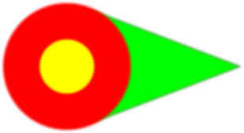

OOVCDE Release Details

Releases
The following lists releases in reverse chronological order.2015-9-2
2015-9
2015-8-2
2015-8
2015-7-2
This version contains:- Improved string splitting in class diagrams
- Improved debugger variable display
- Improved editor go to line highlighting
- Added modified indicator to edit tabs
- Fixed intermittent build crash
- Add pthread improvement for external packages
- Improved options loading
2015-7
This version contains:- Added add selected classes dialog
- Fixed export of sequence diagrams for SVG (broken in 2015-6-2)
- Fixed extra include directories for cmaker
- Fixed some typedef relations
- Fixed inheritance of templates and with associations
2015-6-2
This version contains:- Added ability to load class and portion drawings
- Added class complexity and directory line counts
- Refactored GUI/BLL mainly for graphs, fixed some graph issues
- Fixed add all related classes menu item
- Changed default class options for classes from other components
2015-6
This version contains:- Added include dependency diagram
- Changed portion graph positioning
- Fixed problems with newer versions of GTK
- Changed to menu bar instead of tabs
- Removed C++ parse recursion bug added on 5-18-2015
- Reduced OovEdit CPU usage when many large files are loaded
2015-5-2
This version contains:- Added class list for portion diagrams
- Added right click for portion diagrams
- Added boost and gtkmm as packages in Windows
- Fixed external reference exclude directories
2015-5
This version contains:- Added portion diagrams
- Added typedef relationships
- Improved Linux install directories
- Added XAuthority for loading editor in Linux
- Improved build output
2015-4-2
This version contains:- Child circles in zone diagrams
2015-4
This version contains:- Improved editor code completion
- Improved build output
- Reduced build command line length by preventing recursion for external package directories
2015-3-2
This version contains:- CLang 3.6 for improved MSVC support
- Added color to zone diagrams
- Fixed journal record selection
- Improved duplicate code detection
- Improved background processing - cancel of loading analysis files
2015-3
This version contains:- Added many zone diagram features
- Improved switch case conditions
- Fixed default public/private for class/struct
2015-2-1
This version contains:- Added zone diagrams (circle diagrams for class relations)
- Added duplicate code detection
2015-2
This version contains:- Added background thread to editor
- Added go to definition for include files in editor
- Added display members in editor
- Improved go to definition for variables
- Improved internal filepath handling
2015-1
This version contains:- Switched to mingw-w64 for Windows builds
- Updated internal string handling
- Improved Windows package directory searching
2014-12
This version contains:- Added libwinpthread-1.dll to Windows version
2014-11
This version contains:- Added data complexity calculation
- Added return types to class diagrams
- Added more struct parsing
- Added member usage statistics
- Added help
2014-10
This version contains:- Added McCabe complexity calculation
- Improved sequence diagrams for else if
- Improved sequence diagrams for switch case
- Fixed instrumentation of switch case
- Fixed include dependencies in windows for relative paths
2014-09-2
This version contains:- Converted to CLang 3.5
- Fixed sequence diagrams for else and switch/case
- Fixed coverage tool for default and return statements
- Fixed coverage build for projects with no packages
2014-09
This version contains:- Added test path coverage
- Pruned component graph connections
- Added more functionality to edit component graphs
- Added class relations key for class diagrams
- Wrapped long class names on sequence diagrams
- Fixed recursive directory search for top level files (-ER)
- Changed to relative exclude directories
2014-08-2
This version contains:- Added nested directory projects
- Improved build verbose flag
- Added go to line in editor from menu
- Improved go to definition
- Fixed unindent on Linux
2014-08
This version contains:- Fixed project library order for linking that was broken in version 2014-07-2
- Fixed overwrite of analysis path in Edit/Preferences
- Fixed hang when creating new module
2014-07-2
This version contains:- Debugger now shows variables relative to call stack selection
- Added working directory for debugging
- Editor sets cursor focus when switching views
- Added scrolled tabs for editor
- Fixed static library rebuilding
- Fixed library link order for multiple static library dependencies
- Fixed path separators for Windows for external references
2014-07
This version contains:- Reduced analysis file size (xmi files) and memory reduction
- Improved cross compiler support
- Ability to create cmake files from menu
- Updated cmake files
- Fixed graph drawing problems in Linux
- Fixed class graph layout in 32 bit Linux
- Many other bug fixes
2014-06-2
This version contains:- Reduced analysis file size
- Project exclude directories
- Zoom on class diagrams
- Added background process dialogs
- Fixed parsing of some conditional expressions
2014-06
This version contains:- Fixed namespaces
- Multi-threaded builds
- Improved class drawing for long names
- Added scroll bars to component graphs
- Allowed adding classes from class list to class diagrams
- Fixed crash in object model for some class definitions after declarations
- Fixed module save .tmp file bug.
2014-05
This version contains:- Editor now includes a debugger
- Analysis uses multiple threads
- Editor includes find in files
- Build arguments specific for components
- Many bug fixes
2014-02-2
This version contains:- Improved editor with tabs for files
- Editor line numbers
- Bug fixes introduced in 2014-02 related to type lookup
2014-02
This version contains:- Display dependency diagrams including external package dependencies
- Vastly improved speed of loading projects especially for large projects
- Reduced large delays for large drawings
- Automatically determines library and package link dependencies for each component
- The oovCMaker tool will generate CMake files from a project
- Fixed namespace bug that prevented classes in namespaces from displaying
- Fixed bug for filename case problems
- Fixed bug for deleting stale build data
2014-01-04
This version contains:- Added external packages for easier builds
- Fixed build bug for scanning projects (-ER is workaround for bug)
- Fixed bug during analysis for stddef.h
- Fixed bug in journal
2014-01-3
This version contains:- Allow aborting analysis to enable quicker build argument setup and early analysis
- Allow editing component diagrams
- Improved build display output
- Added more build preferences
- Saves different build configurations when build arguments are changed
- Added ability to create new configurations for cross compiling, etc.
- Automatically cleans up build files when arguments are changed
- Fixed process handling on Linux for processes with many errors
- Fixed process handling on Windows to use less CPU time
- Fixed build settings to allow many more components (without buying a bigger monitor)
- Added CMake files
2014-01-2
This version contains:- Use of CLang 3.4
- New component diagrams that show library dependencies
2014-01
This version contains:- Added a new dialog for creating modules (source interface and implementation)
- Improved simple projects and creation of projects.
- Improved the build settings dialog.
- Fixed process execution in some cases on Linux.
2013-12
This version contains:- Added a new dialog for new projects
- Added background processing on Linux
- Doesn't relayout class diagrams when classes are removed or preferences are changed
- Changed the quality of automatically drawn class diagrams
2013-10-2
This version contains:- Optimized include file dependencies for builds
- Distributed all required files for Windows (GTK and MinGW)
- Improved behavior of tabs
- Added a build output window
2013-10
This version contains:- A C++ syntax highlighting editor
- A component/module list
- Improved build with Debug/Release builds
2013-09-2
This version contains:- Recursive search of roots (includes and libraries) using "-ER"
- Working easy to use build system
2013-09
This version contains:- Improved initial include paths for external dependencies
- Recursive search of includes using "-EI" (Later changed to -ER)
- Improved class navigation
- Fixes such as View Source for Linux and improved parse execution
- Part of a system to build projects
2013-08-2
This version contains:- Journal that keeps a history of modified diagrams
- Collapsing and expanding calls in sequence diagrams
- Improved class diagram symbols
- Improved const function handling
- Many small improvements and bug fixes
2013-08
This version contains many new small features:- Improved class diagram line positions
- Added public, protected, private indicators +,-,# to classes
- Added preferences for each class in a diagram
- Added package names to class diagrams
- Fixed lifelines on sequence diagrams
- Many small improvements and bug fixes
2013-07-2
Sequence diagrams are now created and can be saved as .SVG files. Class diagrams now have many more features.2013-07
The biggest new feature is that the graphs can now be saved into .SVG files, which can be edited in Inkscape.The C++ parser has been changed from a parser used in the Umbrello project to the LLVM/Clang parser. The Clang parser will correctly parse modern C++ variants, and is a complete C++ parser, which allows for collecting any information that is desired for graphs.
The GUI has been changed from QT to GTK partly because of licensing and because the number of dependencies seems to be smaller.
The graph layout has been changed from Boost to a custom genetic algorithm. The Boost graph did not handle different sized nodes/classes easily. The genetic algorithm is not perfect, but gives a surprisingly quick initial layout in most cases.
2010-01
This version used Qt, a C++ parser from the Umbrello project, and Boost graph.The program goal has evolved a bit from the original to focus initially on the graphs. The main goal currently is to be able to quickly view class relations and navigate between classes in systems with hundreds of classes. There are also new symbols for aiding understanding of which classes can modify other classes so that review of certain relations can be performed quickly.
The boost graph and D-Bus usage cost a lot of time to develop due to various problems. Originally the boost graph was going to be based on lists, but was changed to vectors because the implementation was easier. The D-Bus was difficult to use to handle arrays of structures, but eventually that too was figured out. Since the D-Bus support in MS Windows does not seem to be supported well, the code was converted to shared memory. The D-Bus code still exists in case there is better support in the future.
Original Goals
The original purpose of this program was as an integrated software development environment. Since many CPU cores will be available, why not have many tasks happening in the background while the programmer is working? This means that the program can be compiled, and documentation produced while the programmer is developing code. This includes code diagrams that are created in the background.The implementation details of the separation of header files and source files for C++ should be hidden from the developer. This would require an intelligent layout of source methods so that the user doesn't have to organize windows.
One idea was to use a genetic algorithm to create the graphs on a background thread. The boost graph library would be used to create the original graph quickly, then an icon would indicate when the improved graph was ready. The programmer could click on the icon to view the improved graph. This has yet to be implemented.
There could also be a simple language for creating classes for either beginning users, or as a convenience for advanced users. The relations could be specified by a language such as "Mary has-a little Lamb". This could give a tigher understanding for beginners between language and graphs.
More History
Originally the program was called Program Object Relationship Navigator, but the web site was not getting any hits. So a few programs were written to generate random strings to make a name, and the programs all generated OOVCDE. I may post the source code later. The pronunciaton is something like Oov-Kitty, and that is the reason that the cat-eye is used for the scope and const relations symbol, and that the Oov logo is an ice cream cone.